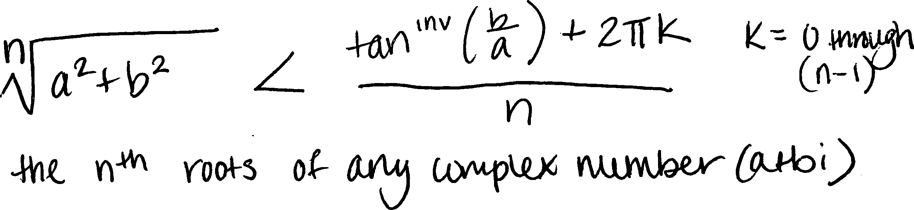
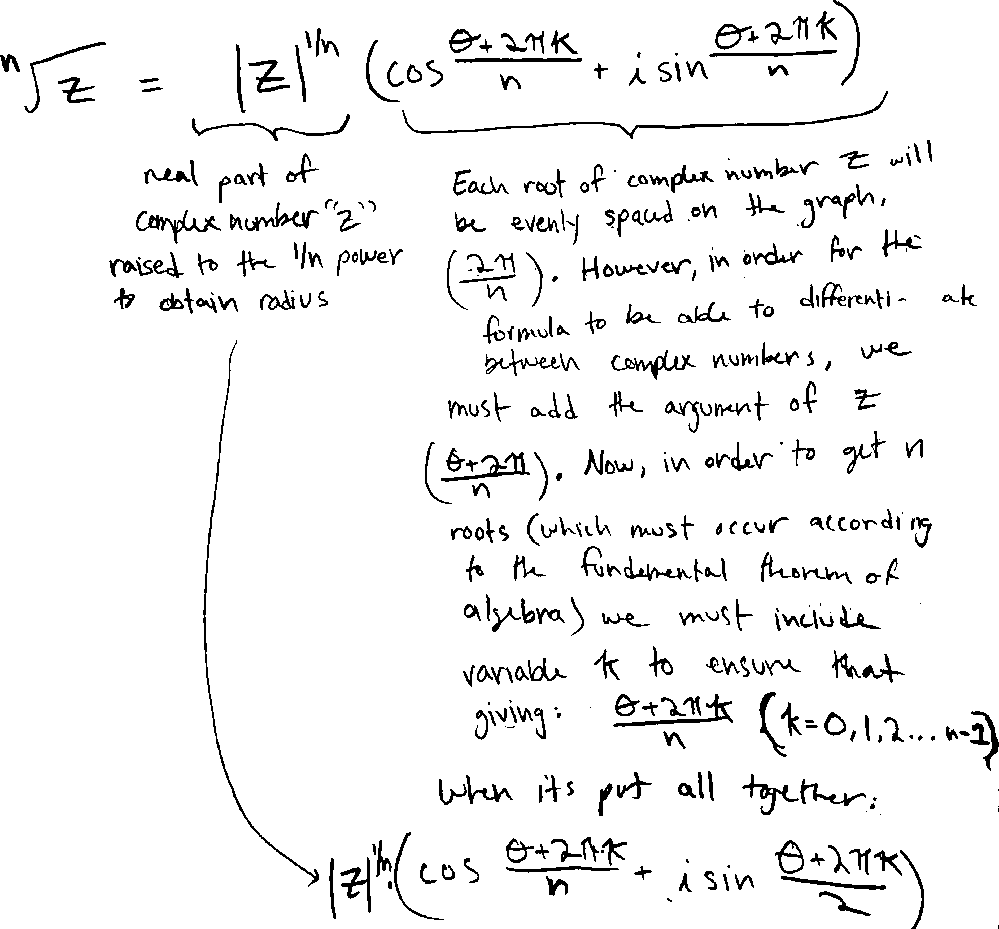

complex roots S2022 kid examples
these are the example formulas for complex roots that some of the kids in Math 3 Spring 2022 came up with and that I excerpted for that year’s set of notes
Of course, many of you already know this, since you managed to figure it out yourselves in class! Since there are so many ways to write this formula—so many ways to describe this/these numbers—I want to show some examples.
Some of you wrote all the roots as a long list, like Landon X.:

Landon’s brother, like many of you, decided not to write a long list, and instead create a new variable to describe all the roots more succinctly:

Some of you made analogies to coding and the counters/indices in for-loops! That’s exactly what we need here—a counter to describe each of the \(n\) \(n\)’th roots as we rotate around the complex plane.
In Block 4, a bunch of you decided to write it in terms of its rectangular form (i.e., in terms of its real and imaginary parts). Here’s a representative example, from Charlotte R.:

Note how you’re all using different letters to represent different things in all these forms. For instance, in Landon’s version of the formula, \(x\) is the number we’re taking the roots of; in Logan’s, \(x\) is the counter. Logan used \(a\) and \(b\) to represent the radius and angle; Charlotte used them to represent the real and imaginary parts. All of those are perfectly valid choices, but they do make it harder to quickly read and scan.
Here’s how a big group of you in Block 8 wrote it (credit for this particular version to Sam Z.):

Kate K. was reminded of all the modular arithmetic she’s learned in Jana’s cryptology class this semester, and decided to write it using that language. Here’s how she wrote the roots of \(i\) (as opposed to the roots of any complex number) using those ideas:

Her fundamental idea, as she told me, was that the angles are all mod \(2\pi\). That’s an excellent insight—and exactly the way to think about the relationship between angles and positions.